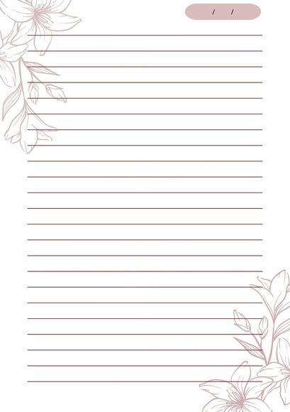

Today is very special... it's your 18th birthday!! You're
finally an adult. I can only imagine how scary that must be.
But if there's anyone who will be able to handle it, it's
you.
We've known each other for almost 4 years now, and every
year I feel like our dynamic changes—in a positive way, of
course. I don't think that either of us, 4 years ago, ever
expected to be here now. But I'm definitely not
complaining.
Every time there's a duo or dynamic, I'm usually the "sun."
But honestly, I would've never been more than a mere star if
it wasn't for you. You make me feel happier, brighter, and
seen. There have been days that were horrible, but when I
talk to you, it's like all of that doesn't matter anymore. I
don't think I've ever told you how you've truly saved me. I
probably wouldn't be here if it wasn't for you.
When you started writing TxI, it made me really happy—maybe
because it made me realize how much I truly meant to you. It
made me feel really special. I remember reading your stories
and giggling, being so invested in every word. Even though
you might say it's bad now, I could read pages on pages
knowing you are the one writing them. [Please bring them
back..] I will always be the Isaiah to your Tobias.
I hope you enjoy the present I made—it took me about a week.
:'] I was originally planning on making a small game with
Tobias and Isaiah, but I got the idea too late, which
would've made it not possible. I might see if I can gift you
something after my birthday... :3
But I really hope you have a great 18th birthday, because
you deserve it. You deserve everything. I love you so much
—my feelings go beyond words. -`♡´-